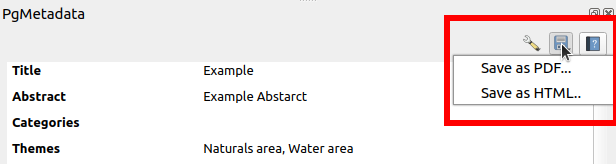
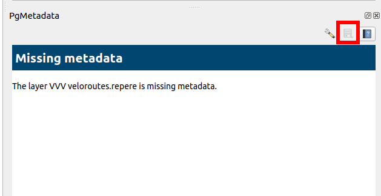
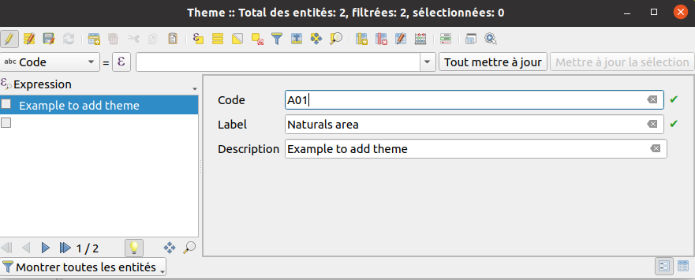
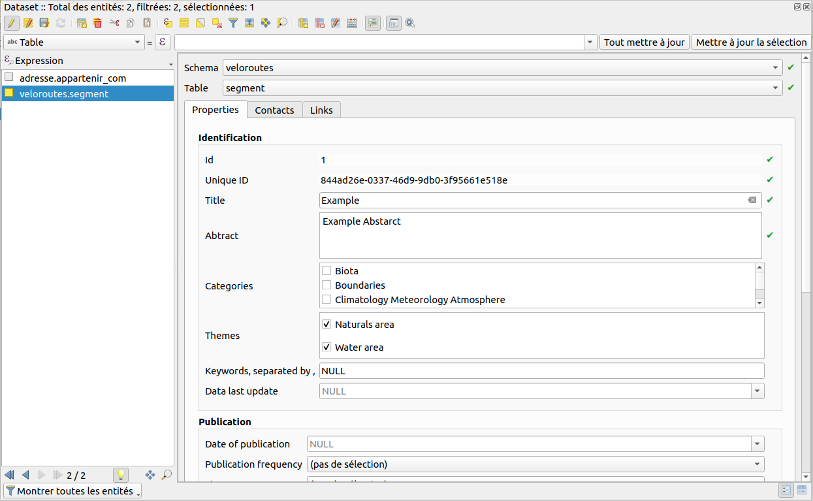
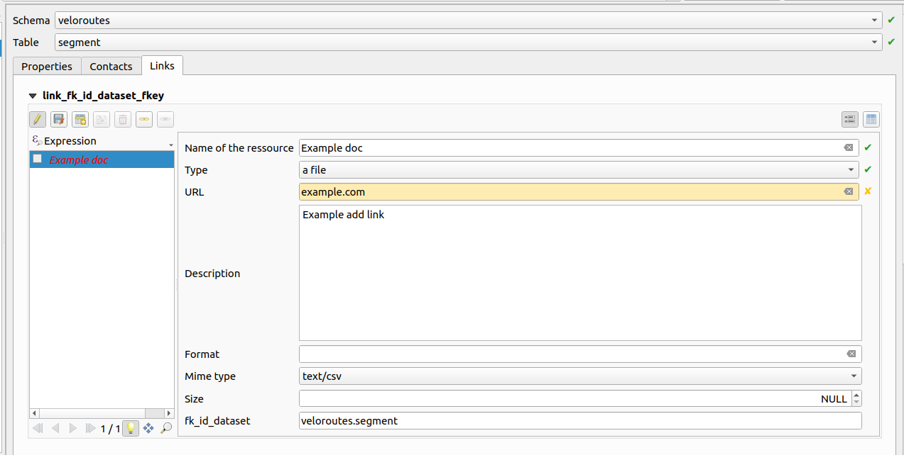
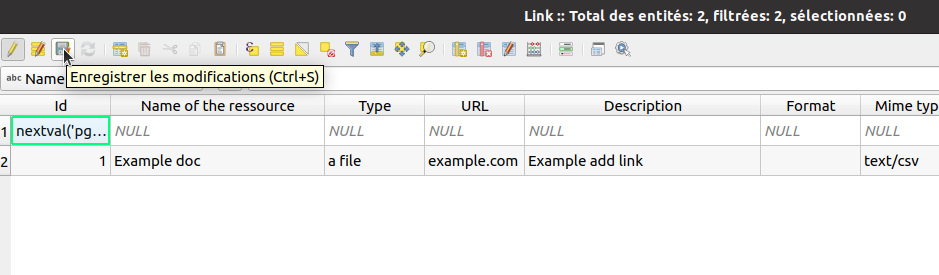

For the normal user
Deploying within an organization
The system administrator can hide PgMetadata Processing algorithms from normal users by adding an environment
variable QGIS_PGMETADATA_END_USER_ONLY. If this variable exists, Processing algorithms won't be displayed.
It's possible to use the QGIS3.ini file instead with end_user_only.
In the QGIS3.ini file within an organisation, you may want some hardcoded configuration :
[pgmetadata]
auto_open_dock=true
end_user_only=true
connection_names=Connection 1;Connection 2;Connection 3
[Plugins]
pg_metadata=true
Locator
Type ctrl+k in QGIS to open the locator widget. You can start type meta then you should see layers in the
list.
Datasource manager
This works without the plugin installed on the computer. It's native in QGIS.

Panel
The PgMetadata panel can be opened. If set, the layer metadata will be displayed according to the layer selected in the legend.
Export
To export metadata as PDF, HTML or DCAT, you need to select a layer in your layer tree saved in the metadata
table dataset. Then in the dock you have a button to open the export menu and choose the output format.

If no layer with metadata are selected, you can't click on the button of the export menu.

For the administrator
Installation
Database
- The plugin is using a schema in PostgreSQL.
- If you just installed the plugin in a new organization, you must use the install database structure
- If the
pgmetadataschema is already existing in your database, you may need to upgrade it after a plugin upgrade using the upgrade database structure
Administration project
- The GIS administrator can generate a QGIS project using create metadata project. You need to open the generated project and use the normal QGIS editing tools.
- In the group called
Information Warnings:Orphan metadatadisplays tables not existing in the database itself, but the metadata exists in thedatasettable.Orphan tablesis the reverse. It displays tables existing in the database but in thedatasettable.
Editing metadata
Before creating metadata for your layer/table, you need to implement some table. To edit this table you need to open the attribute table, switch on Edition mode and add a new row.
Switching to edit mode:

Adding a new row:

Switching to the form view: You can access the form view at the bottom right corner of the attribute table.

-
On the
Themetable you can add many theme corresponding to different theme of your layers. You need to enter a code e.g. "A01" and a label corresponding at the name e.g. "Naturals area". Example adding theme:
-
On the
Contacttable you can add contacts that can later be associated with your metadata layer. Example new contact:
-
The
Datasettable is the metadata table. You can add many rows and one added line corresponds to a metadata of a layer. You need to fill a row with these minimum information :- Table name,
- Schema name,
- Title,
- Abstract,
- Etc
Example to add a new metadata for a layer: On the second picture you can see the theme.

-
Now you can add a contact to a dataset row with the
Datasettable. You can click on a tab calledcontact. You need to allow edit mode in this tab because you implement an other table. Example: -
And now you can add some
Linkto a dataset row with theDatasettable. It's same that to add a contact, you have a link tab. Don't forget to allow edit mode. Example:
When you stop editing a table, don't forget to save your change with clicking on the save icon et leave the edit mode. To save:

To leave the edit mode you need to click on the same button that to enter the edit mode.
HTML Template
You can customize the HTML template.
- Use
[% "name_of_field" %]to display a specific field, egabstract. - use
[% meta_contacts %]to display all contacts related. It's using the template calledcontact. - use
[% meta_links %]to display all links related. It's using the template calledlink.
Lizmap Web Client
The metadata can be displayed in the QGIS Lizmap Web Client using the module. The module is also providing a DCAT catalog.